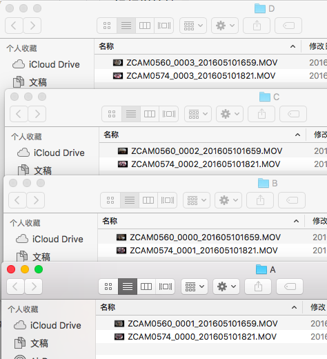

早年的工作总结，纯属纪念了。
1.视频的整理脚本
ReadMe：该脚本可以实现将zcam拍出来的四个镜头的原视频在当前目录下自动整理分类成以同一段视频的不同文件夹。在使用的时候只需要运行该脚本的命令行中输入四个原视频文件夹的绝对路径即可
运行代码如图：
原视频如图：

效果如图：
源代码如下：
1 | #!/bin/bash |
2.本脚本按如下视频序号排序
0001-》1.MOV
0000-》2.MOV
0003-》3.MOV
0002-》4.MOV
3.视频offsetx\offsety计算及校正
在计算offset的准确参数之前需要先把中间结果输出出来，在运行ffmpeg命令行中加入out_dir=”/kit/输出结果/的绝对路径/“:out_frm=1。在中间结果中找到基础镜头成像结果，如下图所示
打开文件，旋转并点击缩放或（command+0）

得如下窗口：
参数值分别代表意义如下图所示：

参数计算过程：
首先先已知x+y=2160 （raw图宽度）
用截图工具可以知道两侧圆被截断的长度a0、b0
由 a0^2+x^2=R^2,
b0^2+y^2=R^2
两式相减得：
x-y=(b0^2-a0^2)(x+y)
再结合第一条公式计算可以出x、y
设定z为圆心到raw图最上方的高
手动量出a1
z=a0+a1
所以offsetx=x-1080(raw宽的一半)
offsety=z-1920(raw高的一半)
又因为
x^2+a0^2=R^2
y^2+b0^2=R^2
计算出R
由于相机的R有参数偏差 ，偏差值如下
在计算真正R值的时候首先应先计算出改多项式之和的百分比
以上图为例即 偏差百分比：
1-0.25462+0.05496-0.00463=0.79571
因此：
R值=R/0.79571（偏差百分比）
4.参数调节技巧
（1）用获取base图的命令行获取baseL_001、baseR_001的图，判断两边远景的某个特征物品是否有对齐，没有对齐的话先进行offsety的微调。固定了offsetx、offsety之后整体开始调节R值，在R=”X X X X”整体调节。R值变大，view就会缩小。
（2）在调整过程中先判断bug是在view中间还是在view边缘，先用调节R值缩放的方式调节View中间的错误，当所有的R已经达到极限（过缝出现重影或者view边缘出现空缺）的时候，开始调节offsetx、offsety，能有效解决过缝扭曲，天花板缺块等问题。
（3）调整过程是四个view的offsetx，offsety，及R值相互影响的过程，在调整过程中切记进行截图备份版本号，以免调整过度或越调越差的时候回不去效果比较好的版本。
（4）假如计算出的四个R值相等，则R值的字符串直接改为实数，如:R=1726
以下脚本可以在脚本的当前目录下生成视频每测试10帧，R值增加10的视频第一帧，可快速生成R=1000~2000供操作者选出最合适的R值。（此脚本的当前目录下需要”getVideo.py”脚本，源代码贴在此脚本后）
testR.sh源代码如下：
1 | #!/bin/bash |
5.参数调节相关提示
屏幕分为四块，对应offset及R值分别为 1 2 3 4 1
offsetx方向是向左为正
offsety方向是向上为正
ZCAM为30帧一秒
6.目前ZCAM参数
-filter_complex stitch=calib=”0 -0.25462 0 0.05496 0 -0.00463”:useCalibration=1:out_dir=”/kit/Wedding/weddingZcam/test/“:out_frm=-1:fov=190:fovH=135:cameraRingRadius=4.5:F=8:r=1:eqr_width=3840:eqr_height=1920:R=”1746 1800 1740 1743”:offsety=”114 130 105.5 98”:offsetx=”25.8 -25.815 22.755 26.93”:fov=190:downF=1:trunc=25:autoOffset=0:stereo=0 -c:v libx264 -preset medium -tune zerolatency -x264-params keyint=25 -vb 40M -vframes 1800 -c:a aac -ac 2 -ab 96k -y $output